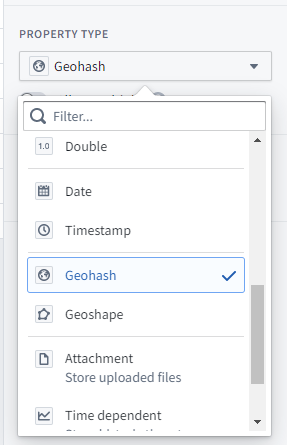
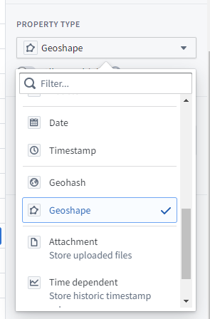
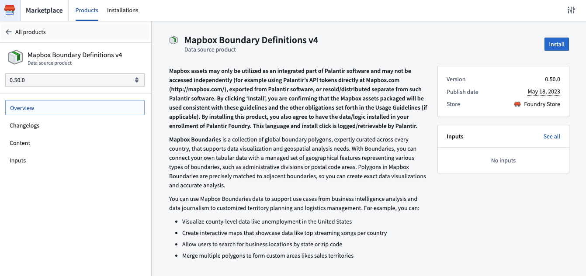
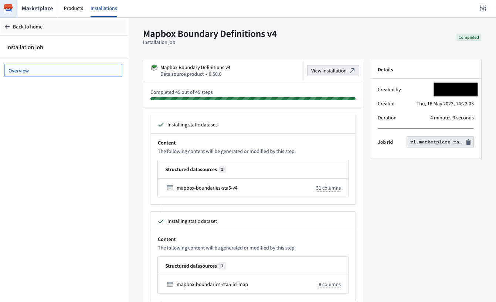
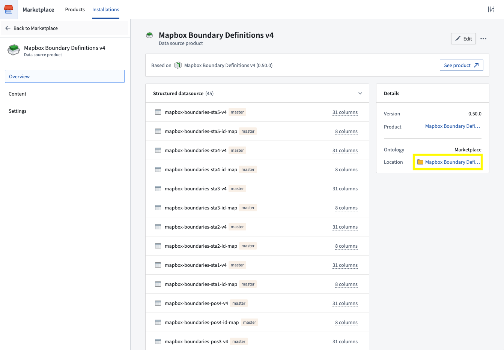
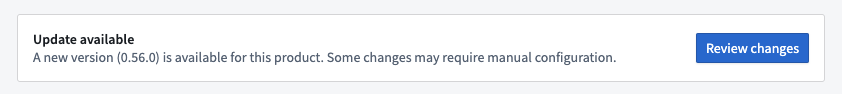
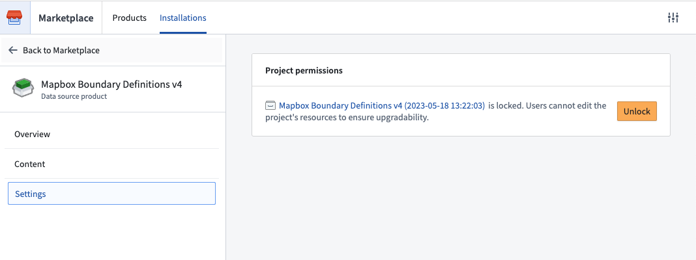

:::callout{theme="warning"}
The geospatial-tools library is no longer actively developed; instead, use Pipeline Builder to load, transform, and wield geospatial data. The functionality for manipulating geospatial data types described on this page has been superseded by Pipeline Builder's geospatial capabilities. Learn more about Pipeline Builder's geospatial features.
:::
Foundry's geospatial-tools library was developed to parse, clean, and convert vector data in formats such as shapefile and GeoJSON into datasets which can be added to the Ontology. However, this functionality has been superseded by Pipeline Builder's geospatial capabilities. You should use Pipeline Builder instead of the geospatial-tools library as the geospatial-tools library is no longer maintained and may not function as expected.
Foundry supports two geospatial property types, each expecting a specific string format: use the geopoint property type for individual points, and the geoshape property type for polygons and lines.
Point geometries can be specified using the geopoint property type. The contents of a geopoint property should be a string of either:
latitude,longitude: For example, 57.64911,10.40744. Coordinates must use the WGS 84 CRS (standard latitude and longitude). Learn more about coordinate reference systems and projections.u4pruydqqvj. Geohashes will be converted into points, using the bottom-left corner of the Geohash rectangle.Objects with geopoint properties are indexed for geospatial search.

Polygon and line geometries can be specified using the geoshape property type. The contents of a geoshape property must be a GeoJSON Geometry string meeting the following requirements:
geoshape property type; use the geopoint property type for Point geometries.This is an example of valid GeoJSON for a geoshape property:
{ "type": "LineString", "coordinates": [ [100.0, 0.0], [101.0, 1.0] ] }
Objects with geoshape properties are indexed for geospatial search.

Once your geospatial data is loaded in the Ontology, there are two primary Ontology mapping tools where your data can be used:
Geospatial capabilities are also available in other Foundry applications, including Slate, Quiver, Object Explorer, and Contour.
In some cases, Foundry also supports adding external layers into maps; for instance, in situations where you have an external feature service or tile server that you want to connect directly to a Foundry map without first loading all the data into a dataset.
Contact your Palantir representative for more details, as this requires additional configuration to enable.
In partnership with Mapbox â, Foundry provides built-in support for creating choropleth-style layers using a variety of available options for defining region boundaries.
With Boundaries, you can connect your Foundry Datasets and/or Ontology with a managed set of geographical features representing various types of boundaries, such as administrative divisions or postal code areas. Polygons in Mapbox Boundaries are edge matched for seamless global coverage, so you can create exact data visualizations and accurate analysis.
Mapbox provides boundaries data across multiple types, levels, and worldviews. You can explore the types and levels of boundaries available using the Boundaries Explorer app â, as well as additional documentation on the different types of boundaries â.
The instructions below are for leveraging the latest version of Mapbox Boundaries (v4). If you are already using a prior version, migrate your pipelines and applications first.
Mapbox boundary definitions v4 are available to download in the Foundry Marketplace. To access from your Foundry instance:
/workspace/marketplace/discovery on your Foundry instance.


When new minor boundary dataset versions become available, you will be able to upgrade via the banner that will appear at the top of your installation. Major version releases will be available as a new data source product.

:::callout{theme="note"} Note that products install into a new project that has edits disabled by default to ensure safe upgrades (for example, if additional boundary datasets become available). Given that, we recommend saving content that leverages these datasets (for example, analyses, pipelines, etc) in a different project. If you need to edit the project itself, you can enable edits by selecting Settings in the left panel and then Unlock, as below. :::

In order to leverage Mapbox Boundaries, you will need a mapbox ID that identifies a region for a specific type of boundary at a specific level. These IDs can be found in the boundaries metadata files â, which are automatically available as part of the Mapbox Boundary definitions product. See Install Mapbox definitions for instructions.
Once you have installed the metadata files, join them against your data within Foundry in order to add the mapbox_id column. Depending on the type and level of boundary, the metadata files will contain other ID and/or name columns that you can use as join keys against your own data.
This mapbox_id column will be used to configure downstream applications to display boundaries-based maps.
Mapbox Boundaries can currently be used to produce Choropleth-style visualizations in any of the following products:
The specific configuration options may differ slightly for each consuming application, but the common configuration options will include:
mapbox_idYou will then be able to use data from your datasets and/or Ontology to drive the styling of these boundaries, such as the coloring of the polygons. For more specific documentation on those additional styling options, visit the documentation of the specific downstream application.
If you are currently using an older version of Mapboxâs Boundaries data (such as V2 or V3), we highly recommend upgrading to v4. In addition to getting updates to the boundaries themselves, the V4 release includes more reliable support for displaying region names in tooltips, as well as support for automatic zoom-to-fit for Mapbox boundaries-backed map layers, amongst other improvements.
When migrating from v3 to v4, there are a few boundaries that have breaking changes. Review a detailed changelog of breaking changes â before proceeding.
To migrate the data in your pipelines, you can either:
feature_id column from V3, and pull in the new mapbox_id column that was added with v4. Make sure to manually account for any of the breaking changes mentioned above.mapbox_id column from scratch.Once you have added the mapbox_id column into your pipeline/Ontology, reconfigure downstream applications to leverage v4 boundaries, and select this new column and the corresponding boundary type/level.